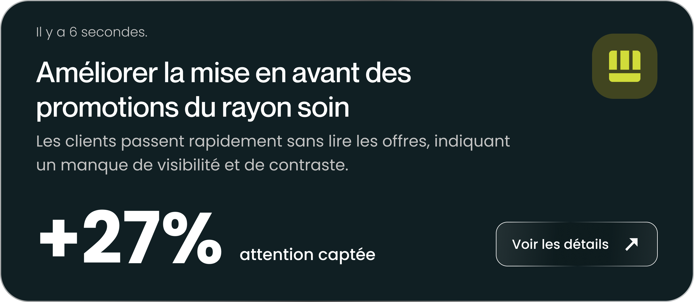
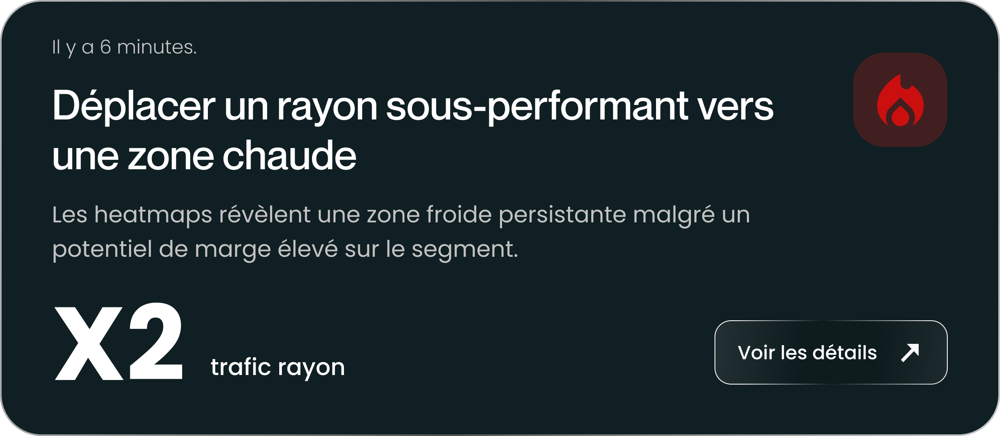
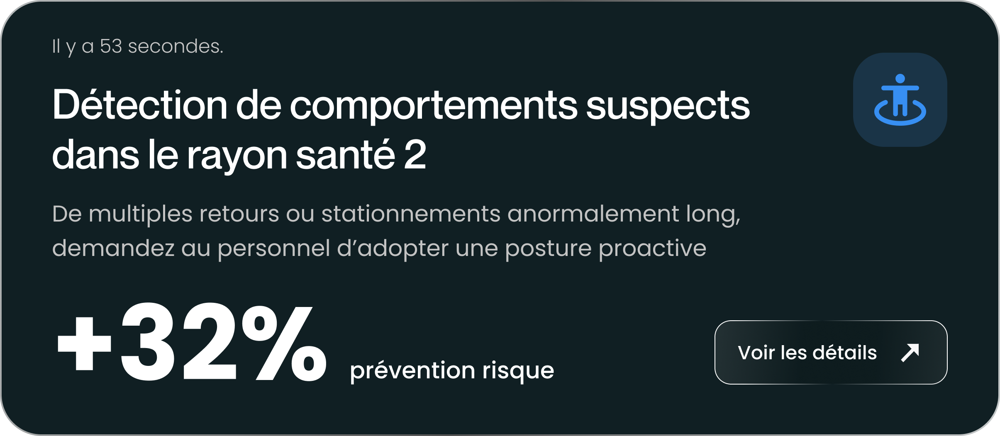
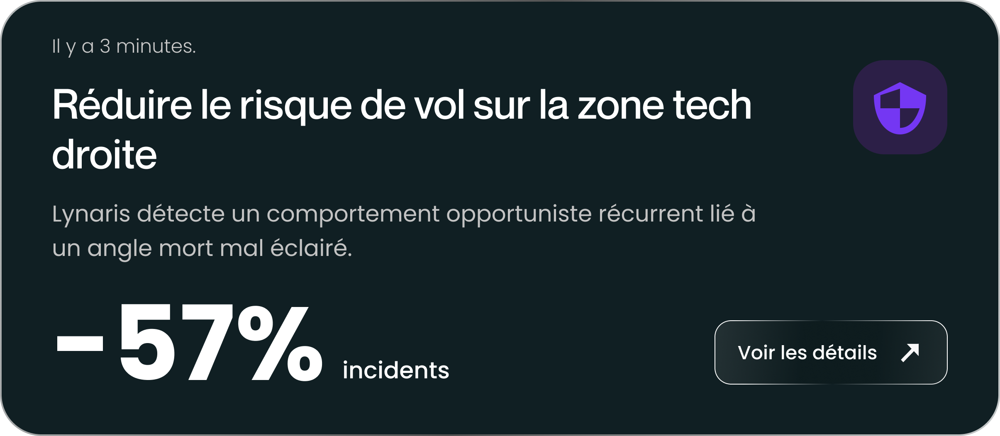
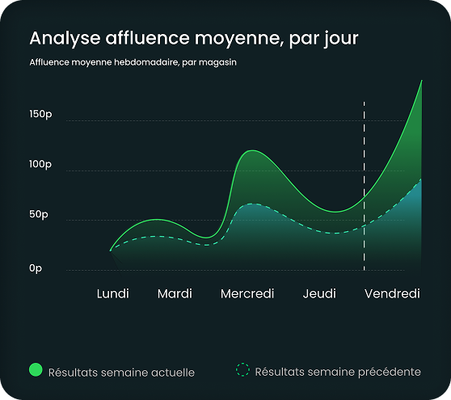

FR
Notre solution
Lynaris analyse tout. Recommande tout. En continu.
Lynaris ne se contente pas de détecter les vols. Elle analyse en continu chaque mouvement, chaque parcours client, chaque interaction produit - et transforme ces données en recommandations opérationnelles immédiates.
Exemples de notifications Lynaris.




Détection claire. Données claires. Résultat mesurable.
Les comportements suspects sont identifiés en temps réel et transmis au personnel. Impact immédiat et mesurable.

Une vision complète du magasin
Chaque mouvement, zone fréquentée ou interaction est analysé pour générer des recommandations concrètes.
Questions fréquemments posées
Lynaris remplace-t-il les systèmes de vidéosurveillance existants ?
Non. Lynaris vient compléter votre système actuel. Dans la grande majorité des cas, il se connecte directement à vos caméras existantes pour les rendre intelligentes, sans modification de votre installation.
Faut-il installer du nouveau matériel ?
Seulement si l’infrastructure actuelle ne répond pas aux exigences techniques minimales (qualité d’image, stabilité du flux). Si besoin, Lynaris fournit et installe un matériel compatible, sans complexité pour le client.
La solution est-elle conforme au RGPD ?
Oui, dès sa conception. Le traitement des images est effectué localement, les flux sont chiffrés, et seules les données strictement nécessaires sont utilisées. Aucune donnée biométrique n’est stockée ou exploitée.
Les visages ou identités sont-ils reconnus ?
Non. Lynaris ne cherche jamais à identifier des personnes. L’analyse porte uniquement sur des comportements et des interactions avec l’environnement, garantissant le respect total de la vie privée.
Combien de temps faut-il pour installer la solution ?
Une installation standard prend environ une heure et peut souvent être réalisée à distance. Lorsqu’un technicien est requis sur place, l’intervention reste rapide et sans interruption d’activité.
Qui reçoit les alertes ?
Vous choisissez librement les personnes autorisées : manager, responsable sécurité ou direction. Les alertes sont envoyées uniquement aux contacts définis par le client, sur les appareils de leur choix.
Les recommandations sont-elles automatiques ?
Oui. Les recommandations sont générées automatiquement à partir des données observées en magasin. Elles sont claires, concrètes et directement exploitables par les équipes.
Est-ce adapté aux petits commerces ?
Absolument. Lynaris fonctionne parfaitement avec un nombre limité de caméras et une surface réduite. La solution a été pensée pour être accessible et rentable, même pour les petits points de vente.
Quel est l’impact sur les équipes en magasin ?
Très faible. Lynaris vise à réduire la surveillance passive et à libérer du temps pour des tâches à plus forte valeur ajoutée, sans alourdir le quotidien des équipes.
Peut-on mesurer le retour sur investissement ?
Oui. Lynaris permet de suivre les pertes évitées, les vols détectés et l’impact des optimisations mises en place. Le ROI est mesurable, clair et suivi dans le temps.